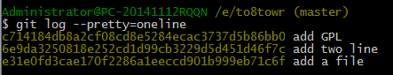
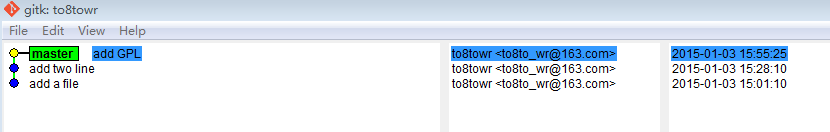
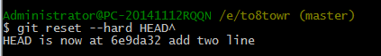
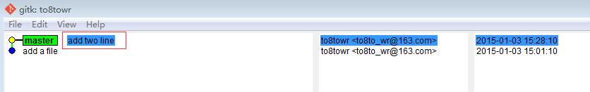
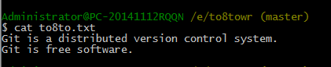
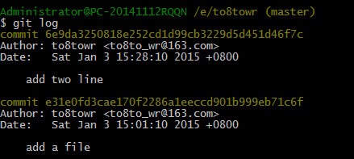
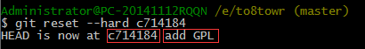
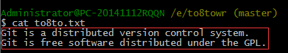
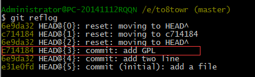

版本回退
为了配合本章内容，我们再来修改一次to8to.txt这个文件，修改内容如下：
Git is a distributed version control system.
Git is free software distributed under the GPL.
然后运行命令：
$ git add to8to.txt
$ git commit -m “add GPL”
提交完成，现在我们再回顾一下我们to8to.txt这个文件总共有几个版本提交到了仓库
版本1：
add a file -- 提交时自己写的注释信息添加了一个空的txt文件
版本2：
add two line
内容为：
Git is a distributed version control system.
Git is free software.
版本3：
add GPL
内容为：
Git is a distributed version control system.
Git is free software distributed under the GPL.
这些历史记录，我们可以用git命令 $ git log 查看：

这里只有3个版本记录，版本信息一目了然。而在我们实际工作中，版本记录成千上万，如果用 $ git log 查看，就会让人眼花缭乱
针对这种情况，我们可以美化一下输出信息
运行 $ git log --pretty=oneline
这样，每次版本信息就显示为一行了
这里的一大串c714184… 6e9dda325… e31e0fd3… 这些是commit id,也就是版本号。Git的版本号和SVN不同，SVN是1，2，3递增的数字
每个人的版本号都不一样，必须以自己的为准。
为什么commit id要用这么一大串数字表示呢？因为Git是分布式的版本控制系统，后面我们还要研究多人在同一个版本库里工作，如果大家都用1，2，3……作为版本号，那肯定就冲突了。
若要更加直观的查看历史版本，可以右键to8to.txt这个文件，点击Git History
每提交一个版本，Git就会把它们串成一条线，黄色小圆点表示当前的版c本
若要更加直观的查看历史版本，可以右键to8to.txt这个文件，点击Git History
在Git中，HEAD表示当前版本，也就是当前提交的c714184…（需要注意的是我的版本号和你们的不一样，以自己的为准）。HEAD^表示上一个版本，HEAD^^表示上上个版本，当要回退到上100个版本的时候，不容易数过来，所以写成HEAD~100
现在，我们动手把当前版本回退到上一个版本 add two line，用到的命令为 $ git reset
$ git reset --hard HEAD^
 这时候，看看to8to.txt里的内容是不是 add two line 那个版本的内容，运行 $ cat to8to.txt
大功告成！现在我又后悔想回退到上一个版本，但是用 $ git log查看当前版本库状态，之前那个最新版本 “add GPL”已经不见了，怎么办？
办法还是有的，只要我们的命令窗口还没关掉，就可以通过之前讲的commit id 来回到之前的那个版本
$ git reset --hard c714184
版本号没必要写全，前面几位就可以了，但也不要只写一两位
这时你再看看你的to8to.txt的内容，是不是回到add GPL这个版本了，答案是必须的。
Git的版本回退速度非常快，因为Git内部有个指向当前版本的HEAD指针，当你回退版本的时候，Git仅仅是把HEAD重新指向“append GPL”。
所以，你让HEAD指向哪个版本，你就把当前版本定位在了哪。
现在，你回退到了某个版本，关掉了电脑，第二天早上就后悔了，想恢复到新版本怎么办？找不到新版本的commit id ，怎么办？
在Git中，有一种药，叫后悔药。所以，不用慌张，吃了就不用后悔了。
我现在的版本的是”add GPL”，我回退到 “add two line”
$ git reset --hard HEAD^
这时的版本是 “add two line”，再想恢复到 “add GPL”，就必须找到“add GPL” 的commit id。Git提供了一个命令 $ git reflog，用来记录你的每一次命令，我们运行它：
第四行显示add GPL 的commit id 为c714184，终于找到了，可以回到未来了
$ git reset --hard c714184
果然回来了
小结：
$ git reset --hard HEAD^ 回到上一个版本
$ git reset --hard commit id 通过commit id 回到指定的版本
$ git reflog 查看每一次命令
$ git log 查看版本历史记录
HEAD指向的版本就是当前版本，因此，Git允许我们在版本的历史之间穿梭，使用命令git reset –hrad commit id
穿梭前，用git log 可以查看历史，以便确定要回退到哪个版本。
要重返未来，用git reflog查看命令历史，以便确定要回到未来的哪个版本。